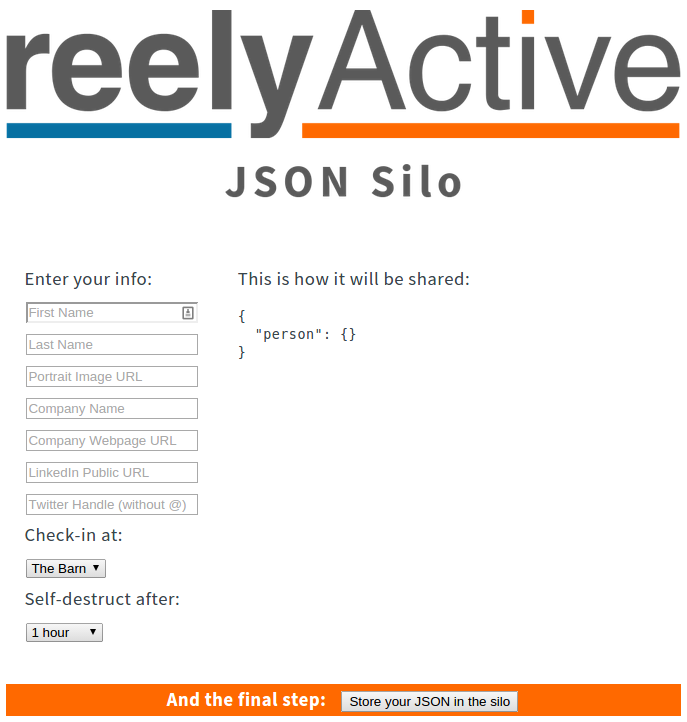
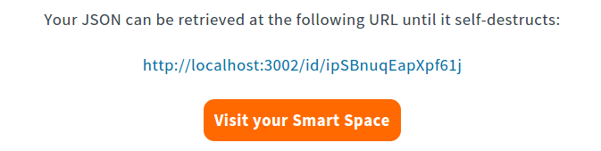
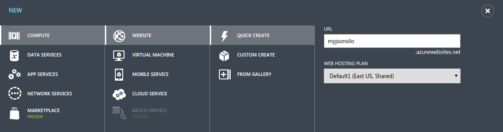

NOTICE: This tutorial applies to earlier versions of the reelyActive code base. We do not recommend following this tutorial. Current tutorials are available here.
Host a JSON Silo
Here we'll present how to host your very own JSON Silo identical to our public silo which you can check out at myjson.info. A JSON Silo stores and shares digital stories: machine-readable representations of people and things.

Will Ferrell's bandmates are right, and that's why we're showing you how to take complete control over your digital stories and share them as freely as you wish via your own hosted instance of json-silo.
Installing Node.js
If you don't already have Node.js installed, be sure to do so first! Installation is easy on all platforms.
Installing json-silo
The easy way is via npm. Create a new directory called myjson, then from that directory run:
npm install json-silo
Yeah, that's it, you're done!
If you prefer to install from github, instead clone json-silo.
Running the silo
In the myjson directory you created above, open a new file called server.js and paste in the following code:
var server = require('json-silo'); var app = new server( { useCors: true, password: null } );
To fire up the silo, simply run:
node server.js
Did it work?
You should see the following line on the console:
json-silo is listening on port 3002 Now open your favourite web brower and browse to localhost:3002 for the json-silo landing page. It should look something like this:
Great! Now it's time to play around.
Create a digital story
Fill in any or all of the info fields at left, and the JSON at right will update immediately thanks to the magic of client-side JavaScript (see jsonerator). Select the option to check-in at The Barn, and to self-destruct after 1 hour. Then press the Store your JSON in the silo button. You should see something like the following:
Click on the link to your JSON URL. A new browser tab will open and the page will show your raw JSON hosted by the silo. If you had entered "Barn Owl" as your name, it would look like this:
{ person: { firstName: "Barn", lastName: "Owl" } } At this point you're sharing your digital story locally: only your computer can access that link. But if we run the code in the cloud, the link would be accessible across the Internet. We'll get there in a moment but first let's see what happened with our check-in at The Barn.
What's at The Barn?
Again, open your favourite web browser and this time browse to localhost:3002/at/test (test is the handle for The Barn). You should see something like the following:
{ _meta: { message: "ok", statusCode: 200 }, _links: { self: { href: "http://localhost:3002/at/test" } }, devices: { ipSBnuqEapXpf61j: { url: "http://localhost:3002/id/ipSBnuqEapXpf61j", } test: { url: "http://localhost:3002/id/test", } } } Notice how your JSON URL is among the list of devices? That's because you checked in. A computer could parse through this list to form a contextual understanding of who/what is present at The Barn.
If you've read the Make a Smart Space tutorial, you'll notice that this is an identical API response format as that of hlc-server. It's no coincidence! You can use json-silo in place of hlc-server to allow for manual check-ins at locations that don't have hardware infrastructure.
If you're keen to see the digital stories you entered floating around in a smartspaces bubble, follow the instructions from the Make a Smart Space tutorial, but when configuring smartspaces, instead set the API root to http://localhost:3002/at/ so that it points to json-silo rather than hlc-server. Then browse to localhost:3000/test to see The Barn as a Smart Space.
Take a break!
The last feature we need to test is whether the digital story you entered will actually self-destruct after an hour. Since you probably have the better part of that hour to kill, why not watch the Saturday Night Live skit that inspired the "More Silo" meme. And then some more videos, you know, while you're waiting for that hour to pass. Then, once it has, refresh the browser tab that had your JSON and you should see the following:
{ }
It really did self-destruct!
Host on Azure
As we mentioned above, if we run json-silo in the cloud, our digital stories would be accessible across the Internet. In this section we'll show you how elegantly simple it is to host json-silo as a website on Microsoft Azure. If you already have an account and git installed on your local machine this will be a breeze.
Get an Azure Account
If you're a startup and you're not already a BizSpark member, get on that now, seriously! Take advantage of all the free stuff, including Azure credits, which would come in handy right now, wouldn't they? Let's do it >
Otherwise, if you don't already have an Azure account, visit azure.microsoft.com and click on Free Trial. Follow the steps until you have an account.
Install git
If you don't already have git installed, be sure to do so. Installation is easy on all platforms. Let's do it >
Create an Azure Website
Okay, now check out how easy it is to create a website with Azure, git and Node.js. Open this tutorial and follow all the steps in the Create an Azure Website and enable Git publishing section, which should start like this:
When you get through that section, STOP! Once the git repository is ready, read on below where we'll show you exactly what to do next.
Prepare the local git repository
On your local machine, return to the myjson directory we created earlier. We'll update our code to be Azure-friendly and then check it in. First, update the file server.js to contain the following:
var server = require('json-silo'); var options = { httpPort: 1337, useCors: true, hlcServerUrl: "http://www.hyperlocalcontext.com", smartspacesUrl: "http://smartspac.es", password: "moresilo" }; var app = new server(options);
You can, of course, choose a better password. Then, in the same directory, create a file called package.json which contains the following:
{ "name": "myjsonsilo", "description": "...", "engines": { "node": ">=0.10.0" }, "dependencies": { "json-silo": ">=0.1.3" } } This file tells Azure to install the json-silo package and what version of Node.js to use. You can change the name and fill in your own description if you like.
Now we can check in your code locally using git. In the same directory, from the command line type:
git init git add server.js git add package.json git commit -m "Initial commit"
Your code is now checked in locally, all that's left is to publish it to Azure!
Publish your website to Azure
Where you left off the Azure tutorial, you should have arrived at a screen which provided you a git repository URL like the following:
https://username@myjsonsilo.scm. ... .git
Now we'll add that as a remote directory to which we'll push our local commit. Again, in the same local directory, from the command line type:
git remote add azure [URL from above] git push azure master If you don't see any errors on the command line, your website should be live in a few seconds!
Visit your hosted silo
Open your favourite web brower and browse to myjsonsilo.azurewebsites.net, or whatever name you selected, to visit your hosted JSON Silo. Click the Login link at the bottom of the page and enter the password you specified in server.js. Now you're ready to create digital stories that can be shared over the Internet!
What's next?
Read the documentation on json-silo to learn about the additional options and features not specified in this tutorial.
Contact us if you'd like your virtual Smart Space to be hosted on smartspac.es.